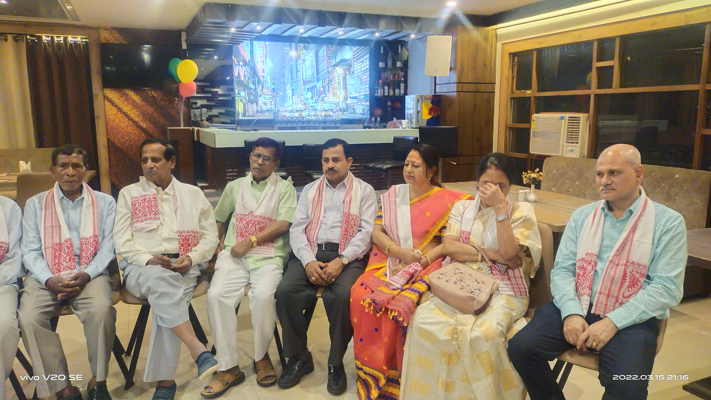

Cotton Collegiate Govt. H.S. School
Giving and donations
Support for the association can take the form of contributions, donations, and merchandise that strengthen belongingness and institutional support.
Giving and donations
Online and offline processing tracks are noted in the source material. While automated modern payment gateways and quick QR validation pipelines are being integrated, members can securely process contributions using cross-checked Bank Demand Drafts or checks payable directly to the Cotton Collegiate Alumni Association.
Merchandise
The source material also mentions CCAA merchandise such as T-shirts, caps, neck ties, coffee mugs, and other items used to promote belongingness and support the association.